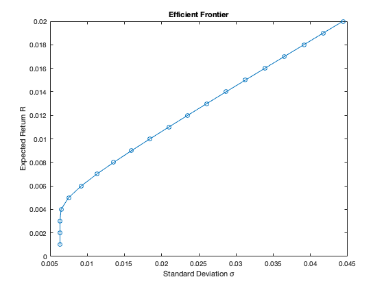

clear
SPY = [162.316422 157.445129 164.611374 165.247635 167.130768 171.009186 173.707306 172.194305 178.989639 175.69902 180.67746 185.641068 184.153793 179.683716 189.782761 185.971954 188.639069 191.064285 186.277267 191.411682 181.100021 174.252869 190.935181 190.75235 186.34668 178.122925 177.9758 188.97287 190.696152 193.940231 193.607468 201.712112 201.95369 200.950333 198.463913 205.775024 208.716263 213.7034 222.100098 221.414474 224.585098 227.754623 228.094208 233.917709 234.60022 238.145416 244.966751 252.454422 254.216766 269.916779 260.102539 251.963898 254.280426 260.461731 260.788605 271.664337 280.335785 280.73175 262.514984 267.38443 242.425949 263.36499 271.90213 275.609772 288.13266 269.758087 287.133087 292.892029 287.988037 292.242065 300.081421 310.943817 318.412933];
GOVT = [22.05658 22.367327 22.412798 22.324566 22.489336 22.666368 22.625456 22.600725 22.870443 22.71966 22.953136 23.148684 23.091032 23.820625 23.37899 23.524946 23.380312 23.310942 23.107677 23.347836 23.325846 23.536987 23.470434 23.375637 23.290922 23.845884 24.041481 24.060373 23.97644 23.97644 24.499292 24.613955 24.436232 24.435991 24.172382 23.465939 23.435972 23.560307 23.626253 23.621605 23.789616 23.931553 23.906149 23.947775 24.19735 23.983847 23.921659 23.906286 23.931028 23.683258 23.482309 23.661215 23.474279 23.654642 23.711668 23.598864 23.771526 23.552107 23.457628 23.662271 23.977739 24.304262 24.196896 24.681721 24.576677 25.171097 25.38345 25.379814 26.229044 26.014978 26.017529 25.939165 25.751354];
EEMV = [49.29031 45.944656 47.592888 49.103779 49.996582 51.164082 51.567547 52.68642 54.389069 51.948036 52.608246 51.487625 49.194267 50.53072 51.809422 52.0387 54.878292 52.973476 50.865826 49.435947 45.694176 44.384544 46.629616 44.812187 43.351112 42.429657 42.456741 46.374718 46.455963 45.291405 46.573326 48.533417 48.697968 49.420166 48.295734 45.909744 46.293697 47.067871 47.977123 49.637905 50.352322 51.307964 51.400745 53.386555 54.358921 54.321518 55.340633 55.349983 56.808533 61.283325 58.184456 59.258606 58.11792 57.88028 54.981037 57.411201 56.730469 56.855114 52.713223 54.995098 53.566528 57.816887 57.203468 57.709782 58.342667 55.596901 57.310574 56.904034 55.900017 56.195316 57.445412 56.146099 57.740711];
return_SPY = zeros(1, 72);
return_GOVT = zeros(1, 72);
return_EEMV = zeros(1, 72);
for j = 2:73
return_SPY(j-1) = (SPY(j) - SPY(j-1)) / SPY(j-1);
return_GOVT(j-1) = (GOVT(j) - GOVT(j-1)) / GOVT(j-1);
return_EEMV(j-1) = (EEMV(j) - EEMV(j-1)) / EEMV(j-1);
end
arith_avg_SPY = mean(return_SPY);
arith_avg_GOVT = mean(return_GOVT);
arith_avg_EEMV = mean(return_EEMV);
geo_return_SPY = geomean(return_SPY + 1)-1;
geo_return_GOVT = geomean(return_GOVT + 1)-1;
geo_return_EEMV = geomean(return_EEMV + 1)-1;
std_SPY = std(return_SPY);
std_GOVT = std(return_GOVT);
std_EEMV = std(return_EEMV);
fprintf('Arithmetic Average Returns of SPY: %f\n',arith_avg_SPY);
fprintf('Arithmetic Average Returns of GOVT: %f\n',arith_avg_GOVT);
fprintf('Arithmetic Average Returns of EEMV: %f\n',arith_avg_EEMV);
fprintf('Expected Returns of SPY: %f\n',geo_return_SPY);
fprintf('Expected Returns of GOVT: %f\n',geo_return_GOVT);
fprintf('Expected Returns of EEMV: %f\n',geo_return_EEMV);
fprintf('Standard Deviation of SPY: %f\n',std_SPY);
fprintf('Standard Deviation of GOVT: %f\n',std_GOVT);
fprintf('Standard Deviation of EEMV: %f\n',std_EEMV);
return_matrix = zeros(3, 72);
return_matrix(1,:) = return_SPY;
return_matrix(2,:) = return_GOVT;
return_matrix(3,:) = return_EEMV;
covariance = cov(return_matrix');
fprintf('Covariance Matrix: \n')
disp(covariance);
c = [0 0 0]';
A = -[geo_return_SPY geo_return_GOVT geo_return_EEMV];
Aeq = [1 1 1];
beq = [1];
ub = [inf; inf; inf;];
lb = [-inf; -inf; -inf;];
b = 0;
table = zeros(20, 5);
for i = 1:20
b = b - 0.001;
[x, fval] = quadprog(covariance, c, A, b, Aeq, beq, lb, ub);
table(i,1) = -b;
table(i,2) = fval;
table(i,3) = x(1);
table(i,4) = x(2);
table(i,5) = x(3);
end
fprintf("-----------------------Table-----------------------\n")
fprintf("Expected_R Variance SPY_Weight GOVT_Weight EEMV_Weight\n")
disp(table)
plot(sqrt(table(:,2)),table(:,1), '-o');
title('Efficient Frontier')
xlabel('Standard Deviation σ')
ylabel('Expected Return R')
Arithmetic Average Returns of SPY: 0.009961
Arithmetic Average Returns of GOVT: 0.002208
Arithmetic Average Returns of EEMV: 0.002809
Expected Returns of SPY: 0.009402
Expected Returns of GOVT: 0.002153
Expected Returns of EEMV: 0.002200
Standard Deviation of SPY: 0.033663
Standard Deviation of GOVT: 0.010552
Standard Deviation of EEMV: 0.035145
Covariance Matrix:
0.0011 -0.0001 0.0008
-0.0001 0.0001 0.0000
0.0008 0.0000 0.0012
Minimum found that satisfies the constraints.
Optimization completed because the objective function is non-decreasing in
feasible directions, to within the value of the optimality tolerance,
and constraints are satisfied to within the value of the constraint tolerance.
Minimum found that satisfies the constraints.
Optimization completed because the objective function is non-decreasing in
feasible directions, to within the value of the optimality tolerance,
and constraints are satisfied to within the value of the constraint tolerance.
Minimum found that satisfies the constraints.
Optimization completed because the objective function is non-decreasing in
feasible directions, to within the value of the optimality tolerance,
and constraints are satisfied to within the value of the constraint tolerance.
Minimum found that satisfies the constraints.
Optimization completed because the objective function is non-decreasing in
feasible directions, to within the value of the optimality tolerance,
and constraints are satisfied to within the value of the constraint tolerance.
Minimum found that satisfies the constraints.
Optimization completed because the objective function is non-decreasing in
feasible directions, to within the value of the optimality tolerance,
and constraints are satisfied to within the value of the constraint tolerance.
Minimum found that satisfies the constraints.
Optimization completed because the objective function is non-decreasing in
feasible directions, to within the value of the optimality tolerance,
and constraints are satisfied to within the value of the constraint tolerance.
Minimum found that satisfies the constraints.
Optimization completed because the objective function is non-decreasing in
feasible directions, to within the value of the optimality tolerance,
and constraints are satisfied to within the value of the constraint tolerance.
Minimum found that satisfies the constraints.
Optimization completed because the objective function is non-decreasing in
feasible directions, to within the value of the optimality tolerance,
and constraints are satisfied to within the value of the constraint tolerance.
Minimum found that satisfies the constraints.
Optimization completed because the objective function is non-decreasing in
feasible directions, to within the value of the optimality tolerance,
and constraints are satisfied to within the value of the constraint tolerance.
Minimum found that satisfies the constraints.
Optimization completed because the objective function is non-decreasing in
feasible directions, to within the value of the optimality tolerance,
and constraints are satisfied to within the value of the constraint tolerance.
Minimum found that satisfies the constraints.
Optimization completed because the objective function is non-decreasing in
feasible directions, to within the value of the optimality tolerance,
and constraints are satisfied to within the value of the constraint tolerance.
Minimum found that satisfies the constraints.
Optimization completed because the objective function is non-decreasing in
feasible directions, to within the value of the optimality tolerance,
and constraints are satisfied to within the value of the constraint tolerance.
Minimum found that satisfies the constraints.
Optimization completed because the objective function is non-decreasing in
feasible directions, to within the value of the optimality tolerance,
and constraints are satisfied to within the value of the constraint tolerance.
Minimum found that satisfies the constraints.
Optimization completed because the objective function is non-decreasing in
feasible directions, to within the value of the optimality tolerance,
and constraints are satisfied to within the value of the constraint tolerance.
Minimum found that satisfies the constraints.
Optimization completed because the objective function is non-decreasing in
feasible directions, to within the value of the optimality tolerance,
and constraints are satisfied to within the value of the constraint tolerance.
Minimum found that satisfies the constraints.
Optimization completed because the objective function is non-decreasing in
feasible directions, to within the value of the optimality tolerance,
and constraints are satisfied to within the value of the constraint tolerance.
Minimum found that satisfies the constraints.
Optimization completed because the objective function is non-decreasing in
feasible directions, to within the value of the optimality tolerance,
and constraints are satisfied to within the value of the constraint tolerance.
Minimum found that satisfies the constraints.
Optimization completed because the objective function is non-decreasing in
feasible directions, to within the value of the optimality tolerance,
and constraints are satisfied to within the value of the constraint tolerance.
Minimum found that satisfies the constraints.
Optimization completed because the objective function is non-decreasing in
feasible directions, to within the value of the optimality tolerance,
and constraints are satisfied to within the value of the constraint tolerance.
Minimum found that satisfies the constraints.
Optimization completed because the objective function is non-decreasing in
feasible directions, to within the value of the optimality tolerance,
and constraints are satisfied to within the value of the constraint tolerance.
-----------------------Table-----------------------
Expected_R Variance SPY_Weight GOVT_Weight EEMV_Weight
0.0010 0.0000 0.1853 0.8824 -0.0677
0.0020 0.0000 0.1852 0.8824 -0.0676
0.0030 0.0000 0.1853 0.8824 -0.0677
0.0040 0.0000 0.2555 0.8629 -0.1184
0.0050 0.0001 0.3941 0.8245 -0.2186
0.0060 0.0001 0.5327 0.7860 -0.3187
0.0070 0.0001 0.6713 0.7475 -0.4188
0.0080 0.0002 0.8099 0.7091 -0.5190
0.0090 0.0003 0.9485 0.6706 -0.6191
0.0100 0.0003 1.0871 0.6321 -0.7192
0.0110 0.0004 1.2257 0.5937 -0.8194
0.0120 0.0006 1.3643 0.5552 -0.9195
0.0130 0.0007 1.5029 0.5167 -1.0196
0.0140 0.0008 1.6415 0.4783 -1.1198
0.0150 0.0010 1.7801 0.4398 -1.2199
0.0160 0.0011 1.9187 0.4014 -1.3200
0.0170 0.0013 2.0573 0.3629 -1.4202
0.0180 0.0015 2.1959 0.3244 -1.5203
0.0190 0.0017 2.3345 0.2860 -1.6204
0.0200 0.0020 2.4731 0.2475 -1.7206
